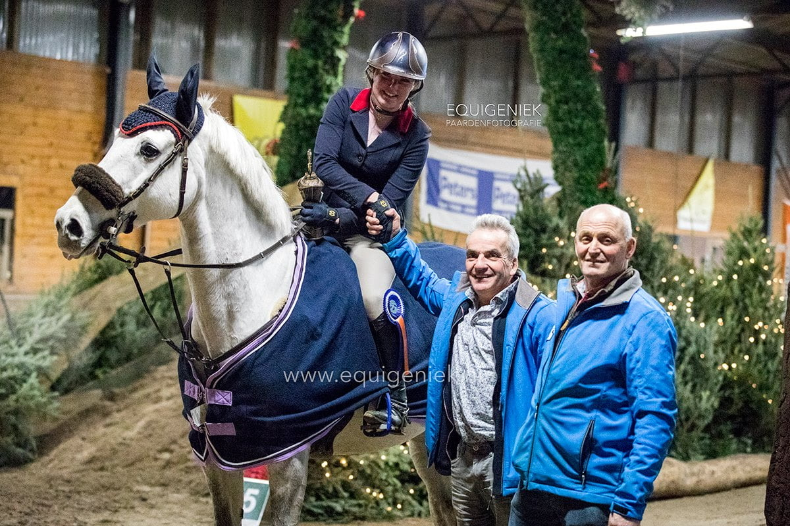

28Maandag
Trainingsdag
Laat je paard of pony wennen aan de hal en de hindernissen.
- Trainingen8.00 tot 20.30 uur
- VoorPaard en pony

Dressuur, springen en de cross zelf, op 29 en 30 december in De Mortel. Met uitdagende hindernissen is de wedstrijd voor iedereen geschikt.
Klik door naar wat je zoekt. Startlijsten en uitslagen zetten we pas online als ze definitief zijn.

Bij de KNHSRubrieken, startgelden en prijzen. En welke proef je rijdt.
 Volgt
VolgtBekijk ze op de site en zoek meteen je naam.
 Volgt
VolgtLengte, snelheid en optimale tijd per klasse, plus de tekening.
 Archief online
Archief onlineZoek je naam in de uitslagen van eerdere jaren.
 Rij een rondje
Rij een rondjeSpring alvast over elke hindernis van het parcours.
 € 30 per uur
€ 30 per uurLaat je paard eerst wennen aan de hal en het parcours.
Eén dag trainen, twee dagen wedstrijd.
Laat je paard of pony wennen aan de hal en de hindernissen.
Het eerste deel van de wedstrijd. In de middag ook trainingen.
De cross door de hal, met uitdagende hindernissen.
Schrijf je in via Mijn KNHS, wedstrijd W183853. Liever eerst oefenen? Kom trainen, of doe allebei.